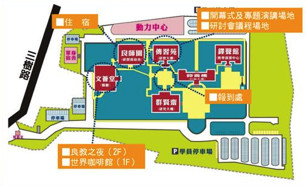

ICOS 2013 - HTML5 主題議程
2013 年 ICOS 開放源碼國際研討會，將結合均優學習論壇，於 4/26~28 日假國家教育研究院合併舉行。有鑑於 HTML5 從今年起將是校園自由軟體與教學資源開發的重點技術，因此 MozTW、JavaScript.tw 社群的 TonyQ 及教育部校園自由軟體中心合力企劃，為大家帶來一整天的 HTML5 主題議程，希望能讓所有關心網路技術，希望將其運用於教育領域的老師、行政人員與各位朋友，都能透過此議程的概略介紹，掌握 HTML5 各面向的基礎概念。
活動資訊
- 時間：2013/04/26~28 (五、六、日)
- 地點：國家教育研究院三峽院區 / 新北市三峽區三樹路2號 / 詳細交通資訊
- 本活動免報名費，提供付費餐點及4/26中南部北上接駁車，另有提供免費住宿
會場平面圖
HTML5 議程
ICOS Day 2 | 04/27 (六) | 傳習苑 105
| 時段 / 投影片 | 議程 | 講者 |
|---|---|---|
 09:00~09:30 |
Why HTML5 ?HTML5 在多年的演進之下，已經逐漸從一個新的語言規格，轉變並擴大為完整的跨平台多媒體、特效、互動網頁技術。本講題將由淺至深探討所謂 HTML5 中所包含的各種技術，並簡介 HTML5 在各種平台（電腦、手機、平板）下的應用。
|
小B笨笨的小B (littlebtc) 目前是軟體業新鮮人，同時也是 MozTW （Mozilla 台灣社群）的志工，在社群中負責網頁標準與 Firefox 附加元件開發的研究與推廣。
|
09:35~10:05 |
現代網頁開發工具現代瀏覽器內建的開發工具所提供的功能已經和以往不可同日而語了，不但可以即時的修改網頁樣式、內容，監看網路狀態，還可以進行 JavaScript 的逐步除錯、效能問題的追蹤等等，而在行動裝置上網量越來越多的現在，各家開發工具也都加入相關的功能，本議題旨就在介紹這些現代的瀏覽器內建開發工具。
|
OthreeOthree，十年前為了製作個人網頁而自學起 HTML、CSS 和 JavaScript，接著便一頭栽進網路標準的世界，並持續關注網路前端技術的發展，不時在部落格及各活動分享新知，近期關注 HTML5、CSS3、Web API、語意網等議題，被認為專長於 JavaScript，其實最喜歡寫的是漂亮的 HTML Markup，現職為 HTC 前端工程師（F2E）兼博士生。
|
10:10~10:40 |
面對行動裝置的設計： Responsive Design由於手機平板等行動裝置的市占率越來越高，現代網頁設計往往還會考量到在行動裝置上的瀏覽。本講題將討論如何透過 CSS 針對不同大小的瀏覽器畫面，供應不同的排版樣式。
|
魏藥魏藥，不務正業碩士生一枚，接觸 HTML, CSS, JS 等前端技術只能算是興趣。
|
Titanium v.s PhoneGap：使用 HTML5 開發原生行動 App
HTML5 不只是撰寫網頁的語言，只要透過 Titanium Mobile 及 PhoneGap 兩個框架的協助，透過既有的 HTML/JS/CSS 能力，也能簡單開發出 iOS/Android/Windows 系統的原生行動裝置應用程式。
|
||
|
10:45~11:05 |
Titanium MobileTitanium Mobile－用Javascript開發原生行動應用程式。Titanium Mobile是一個跨平台行動應用框架，讓開發者只要使用Javascript，就能開發原生的iOS, Android, Blackberry應用程式及HTML5網頁應用程式。本議程介紹Titanium Mobile的特點、開發環境，作為學員技術選擇時的參考。
|
阿修
|
|
11:05~11:25
|
PhoneGapPhoneGap 是一套跨平台開發 Mobile App 的工具，只要利用基本的網頁技術： HTML + CSS + JavaScript 以及其提供的 PhoneGap API 建立應用程式，就能發佈到多種平台的智慧型手機。在這場分享中，講者將為大家介紹什麼是 PhoneGap ? PhoneGap 如何運作？ 並以 Android 為平台，簡單說明如何以 PhoneGap 搭配 HTML5 這套工具開發出手機應用程式。
|
Kuro Hsu
|
11:30~12:00 |
Mozilla WebMakerWebMaker 是 Mozilla 著眼於推動網路素養教育的專案，透過提供多樣化的網頁工具與教案等資源，希望能幫助大家一起來協助育成新世代的網路創作者。
|
IrvinMozTW (Mozilla 台灣社群) 聯絡人兼雜工，持續以翻譯與協調貢獻 Mozilla 專案。日間的工作是 Plurk 噗浪工程師，靠淺薄的 Front-end 技能在台北生活中。
|
13:15~14:10 |
HTML5 的展示與辨識談 rvl.io 雲端 Slides 隨手建及Open CV 應用與 webcam 整合。
|
TonyQ熱愛 JavaScript 並參與 JavaScript 討論多年，發起 JavaScript.tw 台北、台中、高雄社群聚會並力於推廣 JavaScript ， 對前端界面與後端資料層有一定程度而全面性的涉獵，常讚嘆於 JavaScript 在龐富的限制下表現出的豐富性。「JavaScript rocks the world.」
|
14:20~15:15 |
HTML5 的滲透與破壞談如何運用 facebook 所提供之 plugin/api 讓活動盛況能散播到 facebook 上，以及 SQL Injection , XSS Attack 基礎資安議題。
|
TonyQ熱愛 JavaScript 並參與 JavaScript 討論多年，發起 JavaScript.tw 台北、台中、高雄社群聚會並力於推廣 JavaScript ， 對前端界面與後端資料層有一定程度而全面性的涉獵，常讚嘆於 JavaScript 在龐富的限制下表現出的豐富性。「JavaScript rocks the world.」
|
均優論壇自由社群相關議程
傳習苑406
| 時段 | 議程 |
|---|---|
| Day 1 04/26 (五) 19:00~21:00 |
畫國教院地圖陳瑞霖、上官良治
OpenStreetMap 開放街圖，是維基精神的開放協作地圖，由參與者貢獻資料所繪制的地圖。由於開放街圖能兼融不同需求，故很適合不受商業青 睞的地區，突破官方及商業地圖的呈現，或者是能呈現一般地圖不會出現的小眾關心事物。有些地區地理資料因眾人參與甚至勝過現有地圖，更貼近在地人的需求及關心事物。 Mapping Party意指參與者一起畫地圖的實體活動，上官、瑞霖將會從基本的註冊、新手教學，實地探勘，帶參與者來將國教院畫上OpenStreetMap上。 建議攜帶物品：有筆電可帶筆電；有智慧型手機、平板電腦，iOS 系統可安裝 |
| Day 3 04/28 (日) 09:00~10:00 |
用 wiki 記錄學習歷程陳瑞霖、周子暐
對學生學習成績的評價，應該要兼顧學習過程與學習成果，同時若除了教師之外能有多方參與，評價將更能客觀。台灣大學2012年開設的「臺大校園文化 資產詮釋－大家來寫台大維基」實習課中，在台北維基社群協助下，以wiki共筆系統中最著名的「維基百科」做為學習平臺，將台灣大學校園內的多座建築，編 寫成維基百科上的條目。過程中，藉由wiki系統功能紀錄每一位學生完整的學習過程，同時也邀請資深的維基編者一同進行成果檢視。本議程擬邀請該門課程的助教周子暐及聯絡人陳瑞霖先生，展示wiki系統如何達成這些目標，並分享以此平臺進行學生成績評估的心得。
|
| Day 3 04/28 (日) 10:00~11:00 |
網路知識平台的社群經營主持人：上官良治；與談人：中華民國維基協會 王則文、陳瑞霖
OpenStreetMap 鄧東波；Mozilla 臺灣社群 Irvin 網路現有許多透過共筆（co-writing）的全球性的知識平台，尤其英文的語言中有許多成功的公共知識站，例如維基百科、可汗學院是透過共筆平台這種 集體智慧（crowd sourcing）而成功的，在台灣也有許多知識網站，本次議程便邀請多個在台灣成功經營大學志工的知識平台，分享其經驗。
|